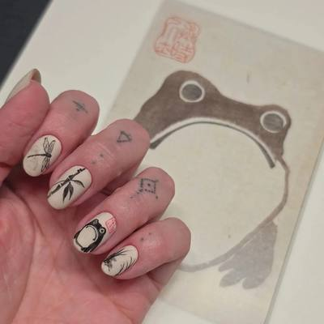
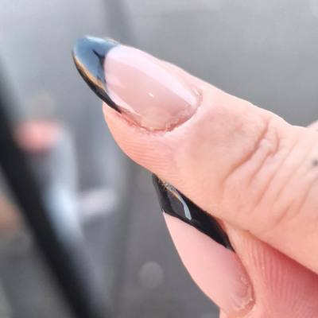
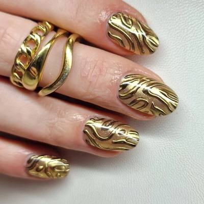
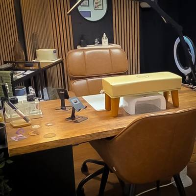
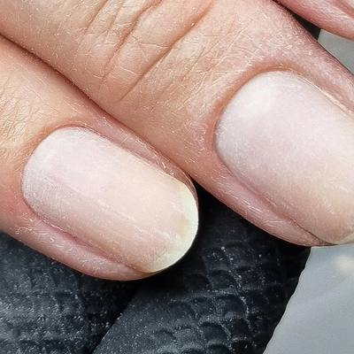
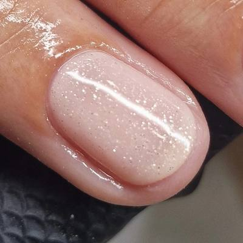

The blog: nail theory for techs who want the why
13 posts so far, on prep, product behaviour, pricing and the myths beginners get taught.
Recalibration Sessions: You Don't Have to Start Again to Improve
One to one, pay what you can sessions for qualified techs: what they cover and why she started them.
The Dannika Detailer: How I Ended Up Launching a Brush With One of My Favourite Brands
Five years from Glitter Planet customer to a brush with her name on it and her daughter's drawing on the box.

Has Acrylic Been Misunderstood?
Builder gel became the favourite and acrylic the villain. She used to believe it too.
I Won a Scratch Stars Award... By Trusting My Gut
How an Apollo and Artemis set, built around a story, won Gel Polish Stylist of the Year.

Overwhelm: How To Handle It Without Burning Out
Where the stuck feeling comes from, and how to keep practising through it.
Q&A With Beginner Nail Techs Part. 1
Answers to the questions new techs are often too embarrassed to ask.
How To Bring In Clients As a New Tech
Why a recognisable style beats chasing trends or dropping your prices.

How to Avoid Lifting: 5 Common Causes and How to Fix Them
What to check when several sets start lifting and your prep has not changed.

Pricing Your Nail Services Without Guilt
Prices worked out from time, costs and what you can keep up.

Common Nail Myths Beginners Are Taught (and the real truth!)
The advice beginners hear on repeat, and what makes the difference instead.

"Why Does My Prep Take So Long?!"...
The technical and human reasons prep speed varies from tech to tech.
Intro Into Nail Content Creation
What filming her work taught her, with tips for starting out.

It's Okay To Ask The Questions
Why the blog exists: the real questions start once you are seeing clients.
Concept note: the first post opens in the new layout. The rest open on Dannika's current site until all 13 are moved across at launch. She writes new ones in the editor.